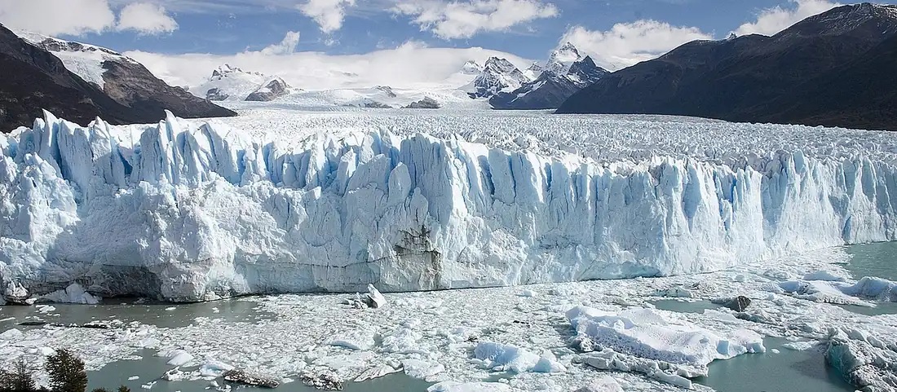

The Argentine Patagonia, one route at a time
Seventeen destinations across four regions, with the best season to visit each one and how many days you should give it.
Browse destinationsHow this guide works
Patagonia is larger than most countries, and the difference between a good trip and a hard one is usually the calendar. These three steps are how the site is meant to be used.
Pick your regions
The guide splits Patagonia into the Andes, the Atlantic Coast, the Steppe, and Tierra del Fuego. Distances between them are long, so most trips cover one or two.
Save the places you want
Every destination card has a save button. Your list stays in this browser, so you can close the page and come back to it later.
Send your route
The planner adds up the suggested days for everything you saved and sends the request with your travel dates and preferences.
Featured destinations
A starting point if this is your first trip south: six places that between them cover glaciers, granite peaks, whales, and the end of the road.
The destination list could not be loaded right now. Please refresh the page to try again.
Before you go
Patagonia runs on distances. Buses between the main towns take between four and fourteen hours, and the paved Route 40 has long stretches without fuel stations, so tanks are filled whenever one appears.
The seasons are inverted for northern hemisphere travelers: the summer high season runs from December to February, and most mountain services close between May and September. The wind blows hardest from October to January, and it is strong enough to change what a hiking day feels like.
Cash is still useful in small towns, and mobile coverage disappears inside the national parks. Park entrance fees are paid at the gate and are separate from any tour you book.